En la parte más occidental de Europa se encuentra esta pequeña isla de origen celta y verdes paisajes. Irlanda es un estado soberano desde 1922 y después de superar periodos complicados actualmente es una de las economías que más crece en el mundo y mayor cantidad de obsequios turísticos posee de toda Europa y del mundo en general. Enfocándonos en este último punto, los lugares turísticos de esta isla son capaces de dejar boquiabiertos a cualquier persona. Si nos remontamos a la prehistoria, por ejemplo, monumentos funerarios como el túmulo de Newgrange, asombra a los visitantes, y más después de saber que fue construido 500 años antes que las pirámides. Además, El paisaje irlandés es encantador a la vez que salvaje y los agrestes acantilados que rodean la costa combinan perfectamente con prados de un verde arrebatador y ruinas dispersas de piedra por toda la isla.
Irlanda es también el lugar idóneo para empaparse de la vida que respiran sus pueblos y ciudades. Aldeas bellísimas ofrecen un merecido descanso acompañado de una cerveza Guinness después de peregrinar por rutas de campo. Además, la capital del país, Dublín, aglutina el carácter irlandés festivo presente en todas las ciudades de la isla, cuyo el objetivo es el de divertirse con el público local que diariamente frecuenta los animados pubs irlandeses al son de la música celta.
En esta página daremos a conocer algunos de los lugares imprescindibles para visitar en Irlanda, a la vez que mostramos posibles opciones para disfrutar de su gastronomía, y por supuesto, hoteles para alojarse.
La capital de Irlanda del Norte. En Belfast encontraremos una ciudad pequeña, pero engalanada y colorida, ya que uno de los grandes motivos por lo que es tan conocida son sus murales urbanos, caracteriazdos por poner en manifiesto desde problemas políticos a problemas sociales. Verlos no tiene desperdicio y mejor aún si aprovechas para perderte por sus calles, sin destino fijo, puesto que podrás ir descubriendo teatros, edificios históricos, cafés y con suerte alguno de los muchos festivales que se celebran durante el año. Sin duda, uno de los mejores planes que se pueden hacer para disfrutar de la ciudad.

Si hay un lugar en Irlanda del Norte que no puedes perderte, ese es el Puente Colgante Carrick a Rede. A 25 metros sobre el mar y uniendo una isla a la costa, atravesarlo es una de las sensaciones inolvidables que seguro te llevarás de Irlanda. Y si hace un poco de viento, prepárate a temblar mientras intentas recorrerlo sin perder pie.
Como dato extra, el precio es de 5,90 libras por adulto.

Otro lugar increíble que puedes visitar en el país, y, por qué no decirlo, el más impresionante visualmente, es la Calzada de los Gigantes, en Irlanda del Norte. Allí podremos encontrar más de 40000 columnas de basalto originadas por el rápido enfriamiento de la lava expulsada por un cráter. Con unas formas casi imposibles y unos paisajes de ensueño, se lleva la corona a uno de los 10 lugares más espectaculares del mundo.
 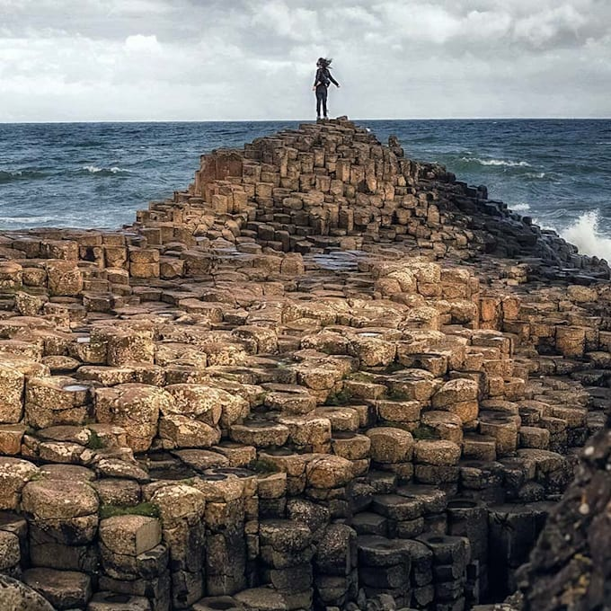
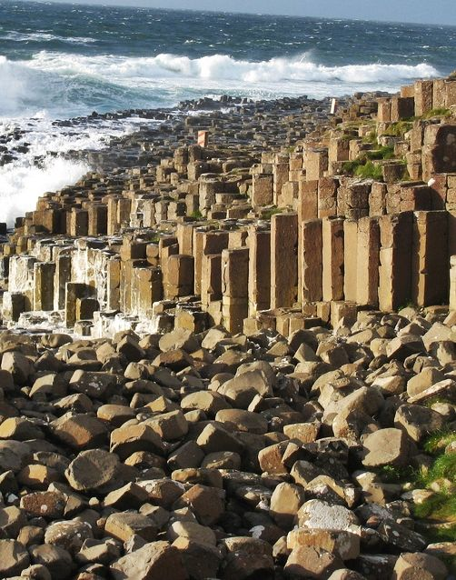
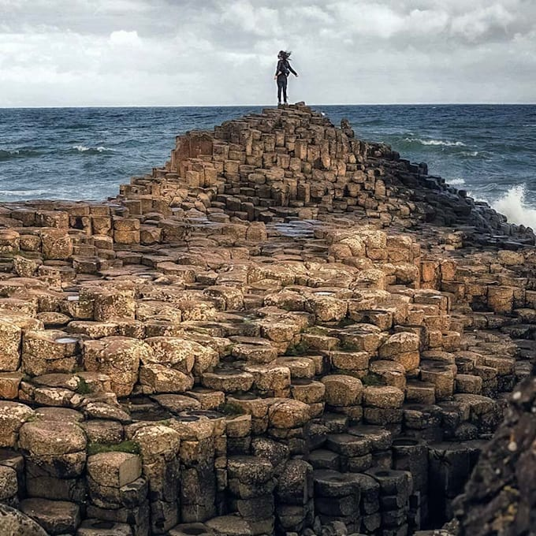
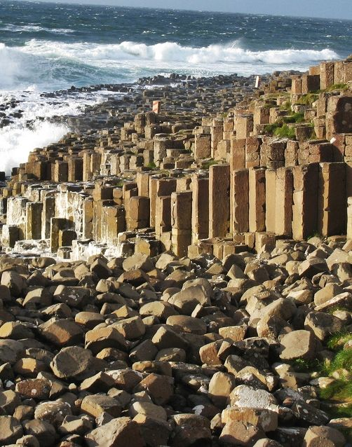
Los Acantilados de Moher se han convertido en una de las atracciones más visitadas al viajar a Irlanda, y la verdad es que no es para menos, ya que son las estructuras rocosas naturales más antiguas de la isla, contando con 300 millones de años desde su formación. Estos acantilados se elevan 120 metros sobre el océano Atlántico en un punto llamado "Hag's Head" y se extienden a lo largo de 8 kilómetros hasta alcanzar una altura de 214 m. Como curiosidad, se dice que desde los acantilados, cuando el día está claro, se puede incluso llegar a ver la bahía de Galway.

Si hay una ruta en Irlanda popularmente conocida y aclamada con especial cariño por el sector turístico es ,sin duda, la del Anillo de Kerry. De ella se dice que es una de las rutas escénicas en coche más bellas del país, ya que atraviesa increíbles paisajes verdes además de hermosas playas vírgenes, muy características del Condado de Karry. Aproximadamente, hacer esta ruta lleva medio día y te llevará alrededor del anteriormente mencionado Condado de Kerry, empezando en la localidad de Killarney.
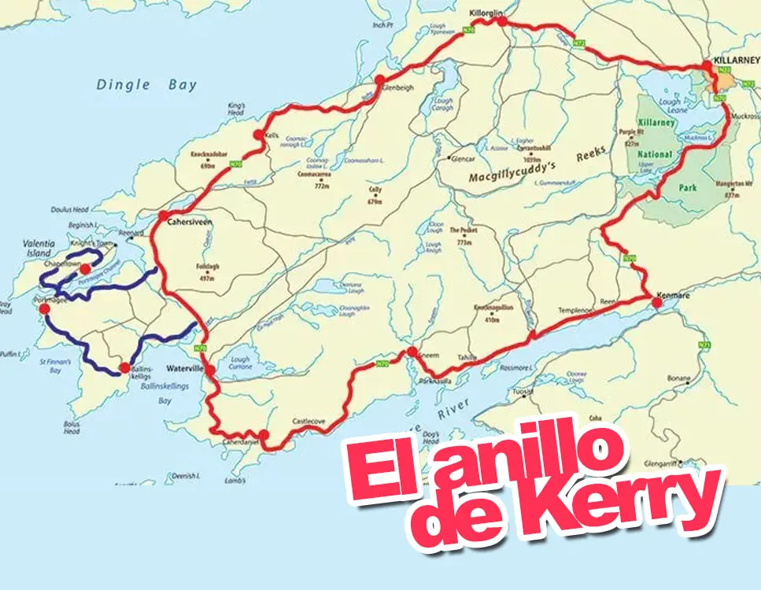 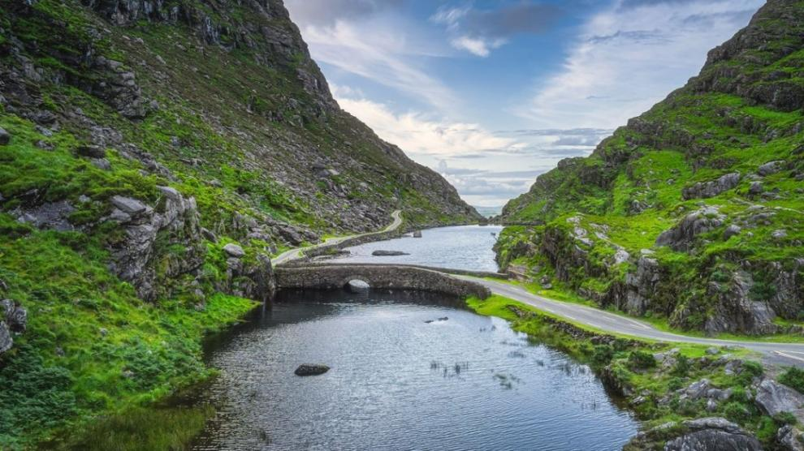Cerca de Condado de Cork, en el suroeste de la isla, se sitúa el poblado de Blarney, en el que se encuentra uno de los castillos más conocidos y famosos de Irlanda: el Castillo de Blarney. Es conocido por ser el lugar en el que podemos encontrar la piedra de la elocuencia (o piedra de Blarney), un bloque de roca, que según cuenta la leyenda, perteneció a la Piedra de Scone. Y ya, si tenemos curiosidad de terminar con la leyenda, tendremos que subir hasta la parte alta del castillo y besarla por la parte de abajo si queremos obtener el don de la elocuencia.
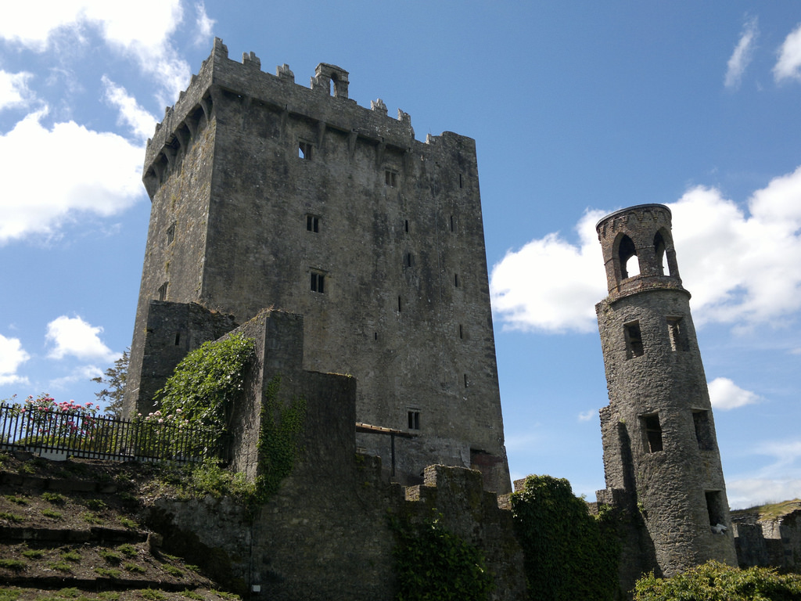 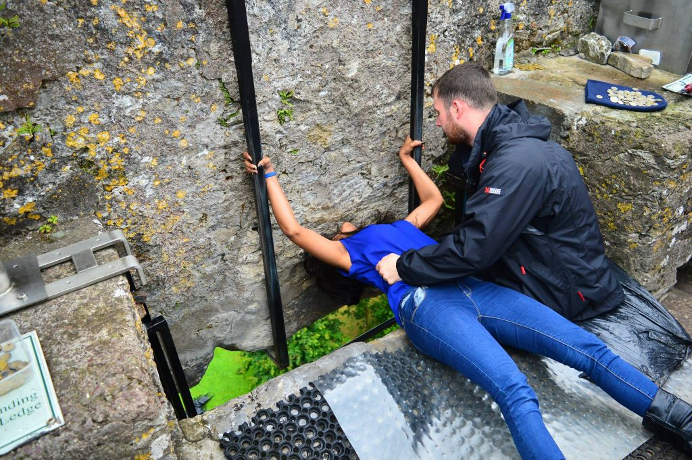 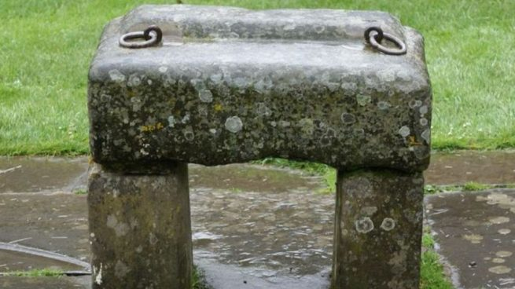Dublín, una de las ciudades más visitadas de Europa y una de las más conocidas. Si bien hay muchas cosas que hacer en Dublín como visitar la Cárcel de Kilmainham, Trinity College, la Fábrica Guinness, la Catedral de San Patricio, la Catedral Christ Church o Temple Bar, uno de los símbolos de la ciudad, recomendamos, al igual que hicimos con Belfast, dedicarle unas horas a callejear, ya que es, y siempre será, una de las mejores formas de conocer y disfrutar de una de las ciudades que mejor sabor de boca os dejarán.
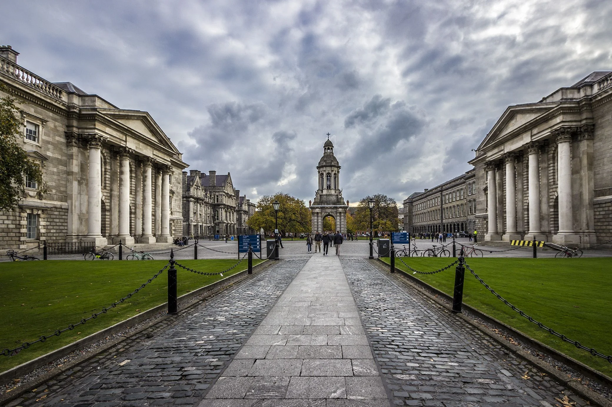 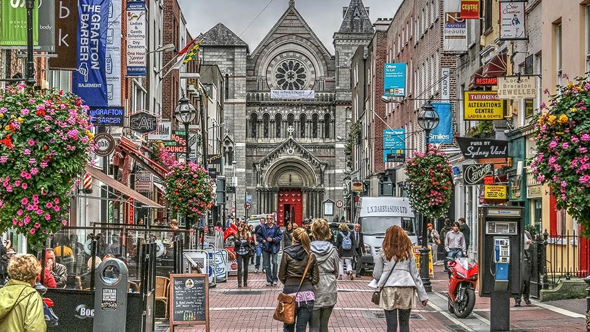
La ubicación lo es todo en esta deslumbrante “Eating House” situada en una antigua tienda de lanas bellamente reformada de Dublín. Los amplios ventanales ofrecen vistas al río Liffey, flanqueado por hayas, robles, fresnos y sicomoros. Centrándonos en la comida, el menú incluye platos tradicionales que devuelven al pasado, como el coddle de Dublín por ejemplo, lo que convierte al Woollen Mills en uno de los lugares de visita obligada en la ciudad. Acércate en cualquier momento del día para degustar la crujiente caballa capturada con sedal, el jamón curado de Connemara o un delicioso pedazo de bizcocho con pasas.
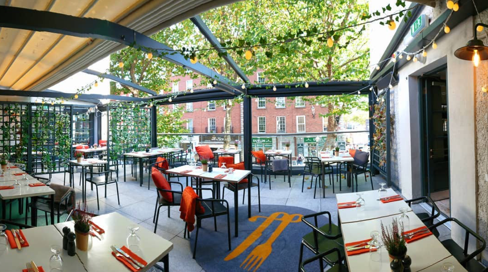La belleza rústica y antigua de 1826 Adare, ubicado en una cabaña tradicional con techo de paja en el precioso pueblo de Adare (Limerick), convierte a este restaurante en el lugar ideal para disfrutar de una comida de temporada. Wade y Elaine Murphy forman el matrimonio que no solo está triunfando con platos frescos y reconfortantes, sino que también logra un delicado equilibrio entre la buena cocina irlandesa y la innovación moderna.
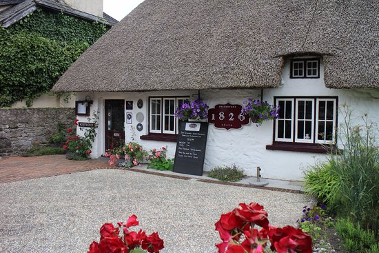La filosofía del Mourne Seafood Bar es servir el mejor marisco local de la manera más deliciosa posible. ¡Y funciona! Pizarras escritas con tiza, un ambiente relajado y productos extrafrescos recién traídos de los puertos locales atraen a multitudes noche tras noche para degustar de todo, desde “ostras al natural” hasta aromáticos cuencos de mejillones frescos de Mourne. Sencillo y delicioso.
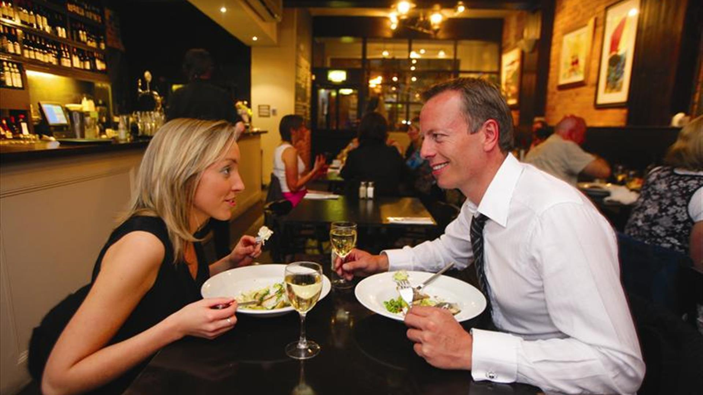Y para rematar, la comodidad del viaje y un buen alojamiento no pueden faltar, por lo que en la siguiente lista puedes encontrar ofertas de viajes y hoteles disponibles al mejor precio para tu viaje: